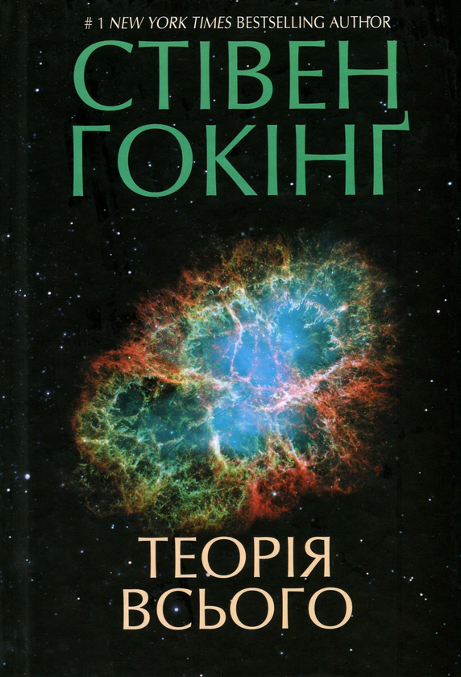
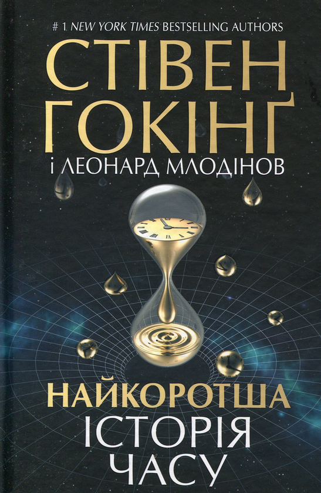

|  |
Бестселер New York Times Все — це те, що нас оточує. Те, частиною чого ми є. Час та простір, небесні світила й галактичні провалля. Це — все. Та як воно з’явилося? Як все почалося? І чим все закінчиться? Неперевершений Стівен Гокінґ досліджує глибокі питання та знаходить іще глибші відповіді. Пошук первісних чорних дір та модель гарячого Великого вибуху, квантова гравітація і стріли часу, граничні умови Всесвіту й моделі Фрідмана. Книга розкриває уявлення про Всесвіт від постулату про те, що Земля має форму кулі, до теорії про розширення Всесвіту, заснованої на найсучасніших дослідженнях. Сім лекцій, що охоплюють широкий діапазон тем, — це справжній тріумф людського розуму. Гокінґ наблизився до таємниці самої суті творіння. І зміг зазирнути ще далі — до чорного позавимірного серця Всесвіту… |
|  |
«Коротка історія часу» намагається висвітити для пересічного читача широкий спектр питань в галузі космології, зокрема великий вибух, чорні діри та світлові конуси. Її головне завдання — оглянути ці питання, але ця книжка також намагається пояснити деякі складні аспекти математики. Починаючи з видання 1996 року в «Короткій історії часу» розглядається можливість подорожей у часі та червоточин, а також досліджується можливість існування всесвіту без квантової сингулярності на початку часу. |